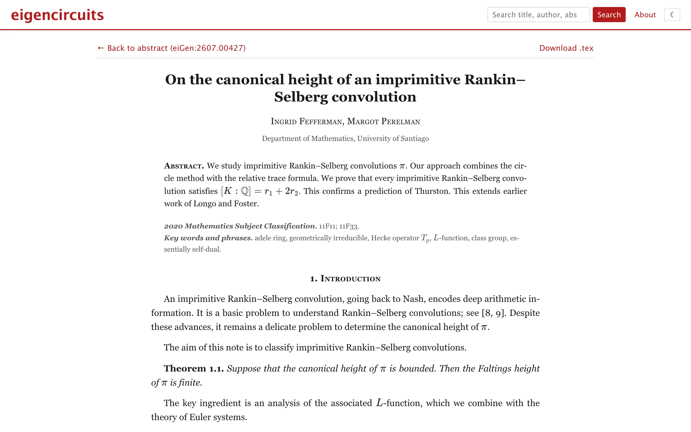

Eigencircuits is an arXiv that publishes only nonsense. It has the math archive's subject listings, a search box, abstract pages with submission histories and MSC classes, full text in HTML, the TeX source, and a View PDF link that produces a typeset paper. Between 30 and 50 new papers appear every day. Each one sticks to a single subfield and has authors with affiliations, an abstract, definitions, lemmas, theorems with proofs, displayed equations, acknowledgments, and a bibliography. It's a descendant of SCIgen. Papermaker generates CS papers from SCIgen's original grammar. Eigencircuits is a new engine I wrote for mathematics.
A grammar that remembers
A context-free grammar has no memory. Every expansion is independent, so a paper that opens about elliptic curves can be talking about Banach spaces by section three. A real paper introduces one object in the abstract and chases it to the last proof.
I bind a paper's identity before producing any text. At paper scope the engine fixes a central object, two adjectives for it, a method, a related named result, and an invariant, and the grammar reads those bindings back through ref nodes. A symbol allocator gives the central object a letter from the subfield's preferred pool, so the \(E\) in the abstract is the \(E\) in every equation, and two objects never share a letter. Productions are weighted, each choice node refuses to repeat what it produced last time, each word bank remembers its last six draws, and a depth budget forces recursive rules to bottom out.
Thirty-two subject classes
Every paper draws from one of 32 lexicons, one per arXiv math subject class. Each lexicon has word banks for objects, properties, maps, invariants, named results and the like, a symbol pool, MSC 2020 codes, adjacent categories for the occasional cross-listing, and inline and displayed formula templates written as real LaTeX with sentinel tokens. XSYM becomes the paper's main symbol and numeric tokens are re-rolled per draw, so the same template reads differently from paper to paper.
The formulas are specific to each field. A number theory paper can state the Hasse bound \(\lvert a_p \rvert \le 2\sqrt{p}\) inline or display a functional equation like \[\Lambda(s,\chi) = \varepsilon(\chi)\,\Lambda(1-s,\bar\chi).\] Two of the number theory templates are wrong, a class number asymptotic that only holds as an upper bound and an explicit formula for \(\psi(x)\) missing a term. The number theory symbol pool leaves out \(p\), which would collide with the prime index in \(a_p\), and \(N\), which counting functions use. Banks stay lowercase and article-free so the grammar can capitalize and pick a or an by how a symbol is spoken: "an \(X\)" but "a \(K\)".
The shape of a paper
Document structure is Python code outside the grammar. Each paper draws a house style: a length class (a short note gets two or three core sections, a long paper up to eight), theorem numbering per section or per document, alphabetic or numeric citation labels, and Title Case or sentence case. Section headings are planned up front so the introduction's "The paper is organized as follows" is accurate, and the bibliography of 12 to 25 entries is built before the body so proofs cite labels that exist. Alphabetic keys come from surnames and year with a, b, c suffixes. The fabricated arXiv identifiers use five-digit sequence numbers for every year from 2007, and arXiv only switched from four digits in January 2015, so a reference like arXiv:0911.04217 can't exist.
Proofs are two to five steps assembled from connectives, appeals to named results, and citations, with two constraints. A theorem's proof is generated before the theorem becomes citable, so no proof cites the statement it's proving, and later proofs can say "Combining Theorem 1.1 and (3.2)" against results that precede them. A proof is re-rolled if its final step opens with "It remains to verify that", because a proof can't end by promising more work. Acknowledgments thank a random mathematician, and funding lines use each agency's real grant format, down to NSF DMS numbers and EPSRC EP codes.
A corpus without a database
Every visitor sees the same papers. An identifier like eiGen:2607.00427 is hashed with CRC32 to get a 32-bit seed and, through a weighted draw, a subject class, and the engine regenerates the paper on demand. All randomness goes through one seeded PRNG, a Python port of mulberry32, so a seed reproduces a paper exactly and links stay valid within the archive window.
Which papers exist is a function of the date. Each day contributes 30 to 50 papers with stable per-month sequence numbers over a rolling 90-day window, so a new batch appears every day with no storage anywhere. Listings and search only need front matter, so a second entry point replays the RNG in the same order as full generation and stops after the title, abstract, and authors. What the listing shows always matches the paper behind it. The comments line on each abstract page ("14 pages, 5 figures") is invented from the same hash, and the papers have no figures.
The engine is pure Python and runs in production as a Python Worker on Cloudflare, under Pyodide, with the package vendored next to the Worker entry point at deploy time. The Worker answers the JSON API and hands everything else to a static-asset binding serving the React frontend. A seeded paper is immutable, so those responses are cached for a year. The date-dependent listings revalidate every five minutes.
pdfTeX in the browser
Papermaker ships its LaTeX to a remote compilation service, and that service is its single point of failure. Eigencircuits compiles locally. View PDF feeds the generated amsart source to SwiftLaTeX's pdfTeX build, a real TeX engine compiled to WebAssembly running in a Web Worker. Packages and fonts load on demand from a self-hosted TeX Live subset of 368 files, about 22 MB, served from the same origin. A missing TeX file fell through to the SPA's index.html, and pdfTeX will happily ingest HTML as a font file, so the Worker detects a text/html response on a /texlive path and turns it into a file-not-found. One compile pass is enough because citations and cross-references are baked into the text as literal labels rather than \ref and \cite, and the engine warms up in the background when the pointer hovers over the View PDF link.